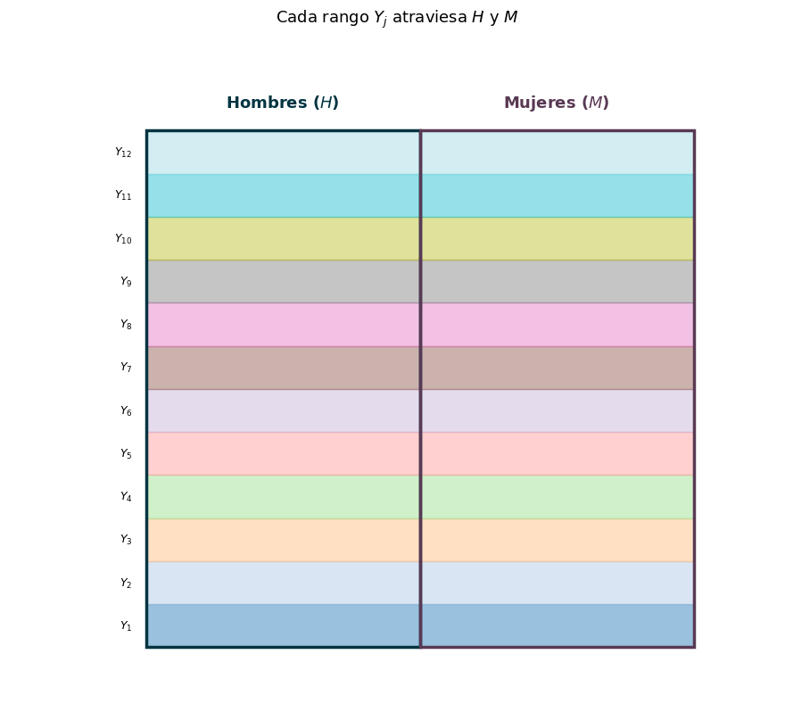
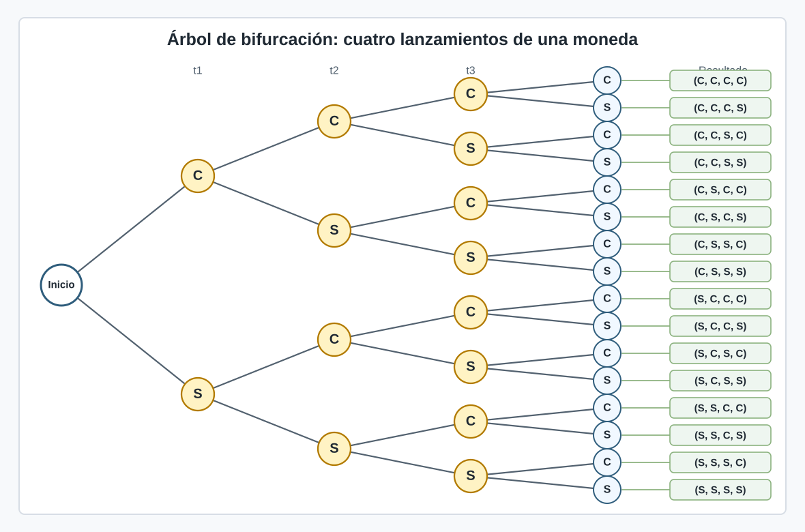
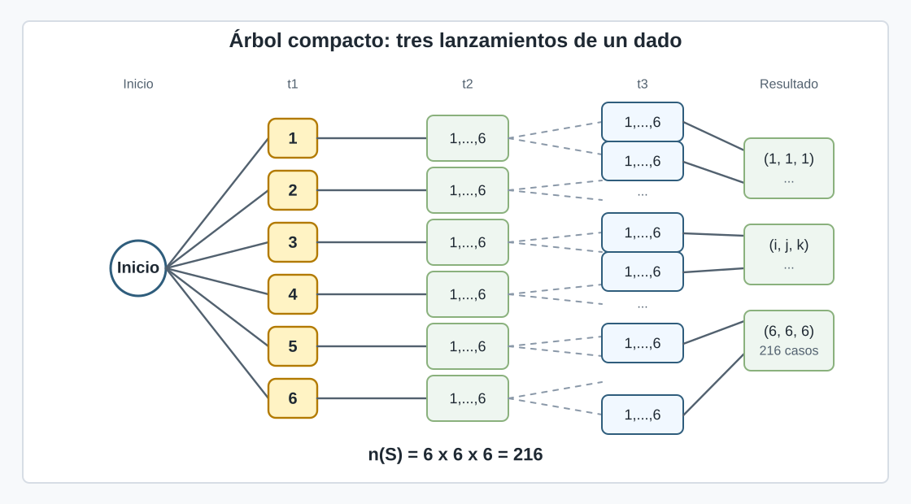
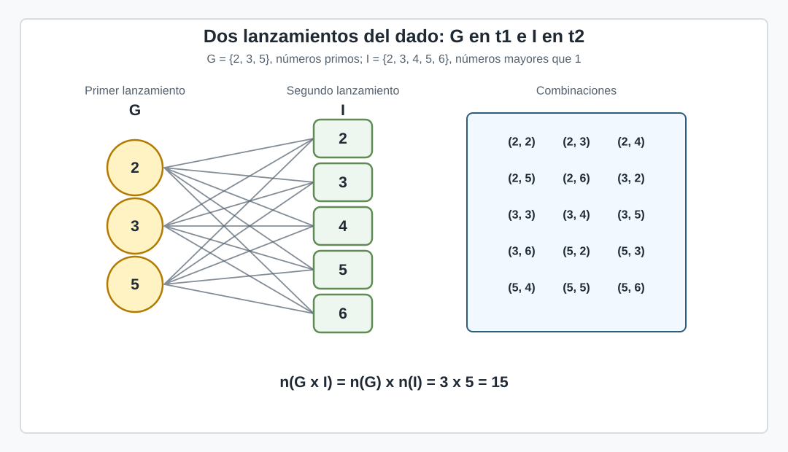

Probabilidad#
Recordemos el caso de análisis de los hogares del capítulo anterior, estos pueden conformarse por 1 hasta 34 miembros.
Como ejercicio intelectual, supongamos que usted hubiese podido observara la conformación de todos los hogares. Imagínese un observador omnipresente que puede viajar al pasado y presenciar la evolución de la formación de los hogares. Usted, sin embargo, no tiene el poder de saber el resultado, solo puede presenciar y tomar apuntes. También suponga que el viaje le borra la memoria y usted no sabe cuántos hogares de un tamaño determinado existirán en el 2022 de Ecuador. Entonces, antes de que se constituyan los hogares, usted hará un experimento.
Experimento#
En el contexto de la probabilidad, un experimento es un proceso, situación o acción cuyo resultado no conocemos con certeza antes de realizarlo.
Usted debería esperar, como ese observador, a que se conformen los hogares y luego censar a los pobladores para conocer la distribución del tamaño de los hogares.
Como dijimos en el capítulo anterior, la probabilidad es la frecuencia relativa. Profundicemos esa idea.
Los experimentos serían, en diversos contextos, los procesos que genera los resultados. En nuestro ejercicio, nosotros no emparejamos a las personas. Esperamos y observamos. El proceso es la demografía. También podemos pensar en el experimento como la situación: la conformación de hogares. Aquí no hay acción, pero en otras situaciones como lanzar una moneda sí.
El experimento es el proceso generador de resultados. En esa línea de sentido, si queremos contar los puntos de las caras de dos dados, hacemos un experimento al lanzarlos al aire. Si empezamos a mirar con atención el precio de un activo en el mercado de valores, también estamos haciendo un experimento. Si medimos la temperatura del ambiente, hacemos un experimento. Existen varias situaciones de interés en las que hacemos experimentos, ya sean mentales, como en nuestro ejemplo del observador omnipresente, o físicos: como al medir la temperatura. Eso sí, cuando no podemos saber con certeza el resultado.
Note que al lanzar una moneda podemos obtener dos caras. Si lanzamos al aire dos dados, 2 caras con puntos entre 1 y 6 cada una. Si miramos el precio de un activo, un rango de precios, expresados en números reales; así mismo al medir la temperatura, obtendremos un rango de números reales. Los resultados, todos, contados o fijados en un rango, se conocen como espacio muestral.
Espacio muestral#
Todos los resultados de un experimento son el espacio muestral. Note que “todos los resultados” pueden representarse en un conjunto de todas las opciones producidas por el experimento. En la Teoría de la Probabilidad (TP), una rama de las matemáticas que estudia la probabilidad, se utilizan los conjuntos como elementos clave. Estos nos permiten ponerle un número a los procesos estocásticos.
Procesos estocásticos#
Un sistema estocástico es aquel de comportamiento no determinista. En estos sistemas no podemos asegurar, predecir o adivinar con certeza resultados.
Cuando no podemos asegurar con certeza, pensamos en posibilidades. Como señalaron Grimmett and Stirzaker [GS20]:
Muchas afirmaciones cotidianas tienen la forma: “la posibilidad —o probabilidad— de que ocurra A es p”, donde A es algún evento, como “que mañana brille el sol” o “que Cambridge gane la regata Boat Race”, y p es un número o adjetivo que describe una cantidad, como “un octavo”, “baja”, etc.
No está demás precisar que Teoría es, en ciencia, una explicación exhaustiva y comprobable de algún aspecto del universo. Así que la TP es una descripción rigurosa de los fenómenos estocásticos.
Evento#
Un evento es un subconjunto del espacio muestral. Es decir, es un puñado de todos resultados posibles que ocurren en el experimento. Por ejemplo, al lanzar dos dados la suma puede ser de 2 a 12. Representemos este espacio muestral en una tabla: en las filas listemos los puntos de un dado, y en las columnas del otro.
+ |
1 |
2 |
3 |
4 |
5 |
6 |
|---|---|---|---|---|---|---|
1 |
2 |
3 |
4 |
5 |
6 |
7 |
2 |
3 |
4 |
5 |
6 |
7 |
8 |
3 |
4 |
5 |
6 |
7 |
8 |
9 |
4 |
5 |
6 |
7 |
8 |
9 |
10 |
5 |
6 |
7 |
8 |
9 |
10 |
11 |
6 |
7 |
8 |
9 |
10 |
11 |
12 |
Un evento A, digamos, puede ser que la suma de las caras sea par: {2, 4, 6, 8, 10, 12}, o que la suma sea impar {3, 5, 7, 9, 11}. Hay varios eventos que son subconjuntos del espacio muestral.
Al lanzar los dados tendremos solo un resultado, digamo 3 en un dado, y 5 en el otro. La suma sería 3 + 5 = 8. El resultado del experimento es 8, entonces. El evento “suma par” ocurrió. Cualquier resultado que esté en A implica que A ocurra (se dé, tenga lugar, suceda).
Conjuntos y definiciones formales#
Empecemos a expresar estos conceptos de forma económica, es decir, sin tener que repetir largas oraciones:
Espacio muestral: conjunto \(S\) de todos los resultados posibles generados con el experimento.
Evento: \(A \subseteq S\). Note que escribimos \(\subseteq\) ya que \(A\) puede ser igual a \(S\).
Construimos definiciones justamente, entre otros propósitos, para no repetir un párrafo completo cada vez que tengamos que trabajar sobre una situación en la que tengamos que estimar la posibilidad de ocurrencia de un evento. Es fácil emplear símbolos para comunicarnos con otros, además, sin los problemas del idioma, la mala comunicación de ambos, o otras minucias. Y también ser precisos. Las matemáticas son un lenguaje para la precisión.
Partiendo de estas definiciones, queremos cuantificar la posibilidad de ocurrencia de un evento; ponerle un número, que dé cuenta de la magnitud de esa posibilidad. En el capítulo 2 dijimos que la probabilidad era la frecuencia relativa, y dividimos la cantidad de hogares de un tamaño para la cantidad total de hogares del país. Los eventos podían haberse definido como: “el hogar sea de 1 miembro”, “el hogar sea de 2 miembros”, etc. Siendo más breves: “el hogar sea de i miembros”; de esta manera, i puede ser algún valor del conjunto {1, 2, 3, …, 34}.
También podíamos escribir, deseando ocupar menos espacio (\(:=\) es definir):
\(A_i := \text{el hogar sea de } i \text{ miembros}, \forall i \in \{1, 2, 3, ..., 34\}\) o
\(A_i := \text{el hogar sea de } i \text{ miembros}, \forall i = 1, 2, 3, ..., 34\).
Escribir \(A_i\) nos permite definir un evento para cada cantidad de miembros, e identificar al evento.
Quiero que se dé cuenta de que el uso de símbolos matemáticos nos permite ser precisos y breves.
Continuemos.
Al medir la probabilidad, estamos calculando la frecuencia relativa. Siendo específicos, dado un evento \(E\) contamos todos los resultados potenciales que conforman el conjunto del evento (hogar de \(i\) miembros en nuestro análisis de los hogares) y lo dividimos para la cantidad de eventos posibles del espacio muestral (total de hogares de Ecuador).
Ese conteo se puede expresar matemáticamente (con símbolos, precisión y brevedad) con una función \(n(\cdot)\), donde \(\cdot\) es cualquier evento. Así, con un conjunto \(C\), \(n(C)\) es la cantidad de elementos del conjunto \(C\).
Sean \(E\) el evento de interés y \(S\) el espacio muestral de nuestro experimento, \(\frac{n(E)}{n(S)}\) es la probabilidad del evento \(E\). Usaremos \(P\) para referirnos a probabilidad, y \(P(E)\) para aludir a la probabilidad de \(E\). Así:
(Me reservo el derecho de ser redundante o poco ahorrativo de palabras en aras de que usted, estudiante, entienda sin duda razonable cada definición y objeto matemático).
Es importante subrayar que \(n(\cdot)\) y \(P(\cdot)\) son funciones (si usted no recuerda que es una función, revíselo brevemente con su agente favorito de IA).
En el siguiente capítulo exploraremos las propiedades que debe tener una función de probabilidad. Esto nos permitirá ser claros cuando hablemos de estimar probabilidades, incluyendo las limitaciones de nuestras estimaciones. Por ahora, solo vamos a pensar en aritmética (divisiones) y conceptos.
Hagamos un par de estimaciones. Usemos nuestros datos censales para calcular la probabilidad del evento \(M := \text{ser mujer}\).
Estimemos la probabilidad con Python.
Show code cell source
import pandas as pd
import pyarrow
url = "https://github.com/Michaeljo112/estadisticalibro/releases/download/popec22/popec22.parquet"
df = pd.read_parquet(url, engine='pyarrow')
# 1: Hombre
# 2: Mujer
df.groupby("P02").size().reset_index(name="n")
| P02 | n | |
|---|---|---|
| 0 | 1 | 8252523 |
| 1 | 2 | 8686463 |
Como puede ver, existen 8.686.463 mujeres; entonces, \(n(M) = 8.686.463\). Además, definamos \(H := \text{ser hombre}\) y \(S := \text{ser ecuatoriana/o}\). Por lo tanto, \(n(S) = 16.938.986 = n(M) + n(H) = 8.686.463 + 8.252.523\). De modo que
Eventos conjuntos#
Ahora consideremos la distribución por edad de hombres y mujeres.
df["sexo"] = df["P02"].map({
1: "Hombre",
2: "Mujer"
})
tabla = pd.crosstab(df["P03"], df["sexo"], margins=True)
tabla
| sexo | Hombre | Mujer | All |
|---|---|---|---|
| P03 | |||
| 0 | 123115 | 118635 | 241750 |
| 1 | 121869 | 116379 | 238248 |
| 2 | 131116 | 126040 | 257156 |
| 3 | 139340 | 133807 | 273147 |
| 4 | 144409 | 138615 | 283024 |
| ... | ... | ... | ... |
| 117 | 1 | 0 | 1 |
| 118 | 0 | 2 | 2 |
| 119 | 1 | 0 | 1 |
| 120 | 2 | 2 | 4 |
| All | 8252523 | 8686463 | 16938986 |
121 rows × 3 columns
En la tabla de arriba podemos ver cuántas mujeres y hombres de determinada edad hay. Como puedes ver, tenemos personas que alcanzan hasta los 120 años; cosa que es muy extraña, pero así constan los registros. Para poder resumir estos datos, usemos rangos de edad de 10 años, y asignemos cada rango en order de edad de menor a mayor a los números 1, 2, 3, etc.
bins = list(range(0, 111, 10)) + [121]
labels = [f'{i}-{i+9}' for i in range(0, 110, 10)] + ['110-120']
df['rango_edad'] = pd.cut(df['P03'], bins=bins, labels=labels, right=False)
cod_rango = {label: j+1 for j, label in enumerate(labels)}
df['cod_rango'] = df['rango_edad'].map(cod_rango)
tabla_rangos = pd.crosstab(df['rango_edad'], df['sexo'], margins=True)
tabla_rangos = tabla_rangos.assign(
cod_rango=tabla_rangos.index.map(cod_rango)
)
tabla_rangos
| sexo | Hombre | Mujer | All | cod_rango |
|---|---|---|---|---|
| rango_edad | ||||
| 0-9 | 1381426 | 1323986 | 2705412 | 1.0 |
| 10-19 | 1599313 | 1542088 | 3141401 | 2.0 |
| 20-29 | 1376879 | 1466201 | 2843080 | 3.0 |
| 30-39 | 1142599 | 1274386 | 2416985 | 4.0 |
| 40-49 | 977874 | 1086091 | 2063965 | 5.0 |
| 50-59 | 766748 | 845888 | 1612636 | 6.0 |
| 60-69 | 548061 | 603626 | 1151687 | 7.0 |
| 70-79 | 307496 | 344853 | 652349 | 8.0 |
| 80-89 | 125417 | 158017 | 283434 | 9.0 |
| 90-99 | 25831 | 39468 | 65299 | 10.0 |
| 100-109 | 862 | 1835 | 2697 | 11.0 |
| 110-120 | 17 | 24 | 41 | 12.0 |
| All | 8252523 | 8686463 | 16938986 | NaN |
La tabla anterior resume cuántas mujeres y hombres hay en cada rango de edad, y asigna a cada rango un código numérico. Ahora, pensemos en los eventos que podemos conformar con los rangos de edad. Definamos eventos \(Y_j := \text{que la persona tenga una edad en el rango de edad } j\). Además, podemos definir los eventos “ser mujer y tener 15 años” (ser mujer y tener una edad en el rango 2) o “ser hombre y tener 20 años” (ser hombre y tener una edad en el rango 3). Pensemos en ellos de forma gráfica:
Show code cell source
import matplotlib.pyplot as plt
import matplotlib.patches as mpatches
import numpy as np
fig, ax = plt.subplots(figsize=(9, 8))
ax.axis('off')
col_w = 3.0
row_h = 0.45
x_h = 1.5
x_m = x_h + col_w
y0 = 0.5
total_h = 12 * row_h
palette = plt.cm.tab20(np.linspace(0, 1, 12))
for j in range(12):
y = y0 + j * row_h
color = palette[j]
ax.add_patch(mpatches.Rectangle((x_h, y), 2 * col_w, row_h,
color=color, alpha=0.45, zorder=1))
ax.text(x_h - 0.15, y + row_h / 2, f'$Y_{{{j+1}}}$', ha='right', va='center', fontsize=9)
ax.add_patch(mpatches.Rectangle((x_h, y0), col_w, total_h, fill=False, ec='#013440', lw=2.5, zorder=3))
ax.add_patch(mpatches.Rectangle((x_m, y0), col_w, total_h, fill=False, ec='#593954', lw=2.5, zorder=3))
ax.text(x_h + col_w / 2, y0 + total_h + 0.25, 'Hombres ($H$)', ha='center', fontsize=13, fontweight='bold', color='#013440')
ax.text(x_m + col_w / 2, y0 + total_h + 0.25, 'Mujeres ($M$)', ha='center', fontsize=13, fontweight='bold', color='#593954')
ax.set_xlim(0, x_m + col_w + 1)
ax.set_ylim(0, y0 + total_h + 1)
ax.set_title('Cada rango $Y_j$ atraviesa $H$ y $M$', fontsize=13, pad=10)
plt.tight_layout()
plt.show()

Como puede mirar, la poblaicón está compuesta por 2 sexos que se representan por dos recuadros H y M, y rangos de edad que se intersectan con ellos.
El evento “ser mujer y tener 15 años”, llamémosle \(Z\), es la intersección de los eventos \(M\) (ser mujer) y \(Y_2\) (tener 15 años o estar en el rango de edad 2). Es decir: \(Z = M \cap Y_2\). Por pura conveniencia, podemos usar \(Z_i := \text{ser mujer y tener una edad en el rango de edad } i\) para ser generales. Así, \(Z_2 := \text{ser mujer y tener una edad en el rango de edad 2}\), particularmente.
Entonces, la probabilidad de “ser mujer y tener 15 años” o “ser mujer y tener una edad en el rango de edad 2” es:
Disjunciones#
Cuando dos eventos no se intersectan se los considera disjuntos o mutuamente excluyentes.
Si yo quisiera estimar la probabilidad de que ser mujer y hombre tendría que estimar:
ya que \(H \cap M\) no tienen ningún elemento en común.
\( \emptyset \)#
\(\emptyset\) es el conjunto vació y no tiene ningún elemento (\(n( \emptyset ) \) = 0). Le parecerá intuitivo que la probabilidad de algo que no tiene elementos sea 0. Esa intuición puede ser una restricción que imponemos. Efectivamente, los matemáticos imponen restricciones a sus cuerpos teóricos. Restrinjamos, entonces, que \(P(\emptyset) = 0\).
\( S \)#
Por otra parte, pensemos en \(P(S)\) (recuerde que \(S\) es todo el espacio muestral). Como \(S\) son todos los resultados posibles, digamos que fueran \(N\) resultados, \(P(S) = n(S)/n(S) = N/N = 1\). La intuición sugeriría que considerar todos los elementos implica que siempre suceden todos los resultados posibles. Sí, es una intuición útil. La refinaremos en los próximos capítulos con definiciones formales, aquí basta con esto.
Filtros, condicionalidad#
Por otra parte, segmentemos por rangos de edad a las mujeres. El evento \(M := \text{ser mujer}\) está compuesto por grupos de edad. Con esta segmentación, dividamos la cantidad de mujeres en cada rango de edad \(k = 1, 2, 3, .., 12\) para el total de mujeres.
n_mujeres = tabla_rangos.loc[tabla_rangos.index != "All", "Mujer"]
pd.DataFrame({
"n_mujeres": n_mujeres,
"porcentaje": n_mujeres / tabla_rangos.loc["All", "Mujer"] * 100
})
| n_mujeres | porcentaje | |
|---|---|---|
| rango_edad | ||
| 0-9 | 1323986 | 15.241946 |
| 10-19 | 1542088 | 17.752772 |
| 20-29 | 1466201 | 16.879149 |
| 30-39 | 1274386 | 14.670943 |
| 40-49 | 1086091 | 12.503259 |
| 50-59 | 845888 | 9.738003 |
| 60-69 | 603626 | 6.949042 |
| 70-79 | 344853 | 3.970005 |
| 80-89 | 158017 | 1.819118 |
| 90-99 | 39468 | 0.454362 |
| 100-109 | 1835 | 0.021125 |
| 110-120 | 24 | 0.000276 |
Si el evento es \(A_k := \text{tener una edad dentro del rango } k \text{ y ser mujer}\), en la tabla anterior calculamos \(n(A_k)/n(M)\). Ahora, consideremos esa división y reescribámosla:
\(A_k\) puede ser reescrito como \(A_k := \text{tener una edad en el rango k } y \text{ ser mujer}:= Y_k \cap M\), de modo que, teniendo en cuenta la expresión de arriba:
Lo que estamos calculando es el peso del rango de edad \(k\) dentro del subconjunto de mujeres. Esto es calcular la probabilidad de estar en el rango de edad \(k\) dado que la persona es mujer. A este ejercicio se lo denomina probabilidad condicional: la probabilidad de \(Y_k\) dado \(M\), y lo escribimos así:
En general, dados dos eventos \(A\) y \(B\) del mismo espacio muestral:
Claro, siempre \(P(B) > 0\).
Este enfoque de segmentación es muy importante, estudiante, así que será mejor que lo repase hasta que quede claro. Tómese el tiempo que necesite, pero no avance hasta que esté claro.
Composición de ocurrencias: combinanción de espacios muestrales#
Ocurrencias temporales#
Hasta aquí, hemos analizado casos estáticos: en un punto del tiempo, con datos de 2022. Pero qué ocurre cuando consideramos casos dinámicos: sucesos en que ocurren en varios puntos del tiempo.
Consideremos el lanzamiento de una moneda. Si lanzo una moneda una vez, el espacio muestral es cara (C) y sello (S): \(S = \{C, S\}\). Si vuelvo a lanzar la cara tendré otro espacio muestral \(\{C, S\}\) en el siguiente intento. Cada intento podría anclarse a un punto del tiempo \(t\). Así, \(S_t\) es el espacio muestral del tiempo \(t\).
Hagamos un esquema de cuatro lanzamientos, como un árbol de bifurcación. En cada punto del tiempo el experimento vuelve a abrir dos caminos posibles:

Para cada lanzamiento existen dos opciones en el siguiente.
Si quisiera analizar cuatro lanzamientos como un todo, el espacio muestral de cuatro lanzamientos entonces es:
Cada rama completa del árbol representa una ocurrencia temporal: primero observamos el resultado en \(t = 1\), luego en \(t = 2\), después en \(t = 3\) y finalmente en \(t = 4\).
Cada vector elemento de \(S_t\) indica la secuencia de lanzamientos.
Consideremos lanzar un dado, ahora. Concentrémonos en 3 lanzamientos.

Para cada lanzamiento, existen 6 resultados posibles en el siguiente lanzamiento. tengamos en cuenta los eventos \(G := \text{ser un número primo}\) y \(F := \text{ser un número mayor que 1}\). Centrémonos en dos lanzamientos del dado: pensemos en la probabilidad de que el evento \(G\) se dé en el primer lanzamiento y \(F\) en el segundo.
Para el primer lanzamiento existen 3 opciones: \(G = \{2, 3, 5\}\), para el segundo 5: \(F = \{2, 3, 4, 5, 6\}\). O sea, en el primer lanzamiento puedo obtener cualquier resultado de \(G\) y para cada uno de esos resultados podría obtener un resultado de \(F\). Puedo combinar cada número resultado de \(G\) con cada número posible de \(F\). La ilustración a continuación muestra las combinaciones.

Note que una vez que lanzo el dado, el segundo lanzamiento no es alterado por el primero. Hay 6 resultados para el primer lanzamiento, en el cual esperamos que ocurra \(G\). Denotaremos el resultado real del primer lanzamiento con \(r_1\). Si el resultado está en \(G\), lo denotaremos \(r_1^1\); sino, \(r_1^0\). Los subíndices indicarán qué lanzamiento es, y los superíndices si ocurrió o no el evento deseado en el lanzamiento. Además, \(r_1^1\) puede ser cualquier valor de \(G\), por lo que existen \(n(G) = g\) casos favorables.
Los resultados posibles del segundo lanzamiento son 6, y aquí queremos que ocurra \(F\). Denotaremos el resultado real del segundo lanzamiento con \(r_2\) y si está en \(F\) escribiremos \(r_2^1\), sino \(r_2^0\). Además, \(r_2^1\) puede ser cualquier valor de \(F\), por lo que existen \(n(F) = f\) casos favorables.
Podemos verificar si un evento del primer lanzamiento sucedió con una función, que podemos llamar O (de ocurrencia). \(O(r_1) = r_1^1\) si el resultado en el primer lanzamiento estuvo en \(G\); y \(O(r_1) = r_1^0\), sino. Así mismo con \(r_2\): \(O(r_2) = r_2^1\) si el resultado en segundo lanzamiento estuvo en \(F\); y \(O(r_2) = r_2^0\), sino.
Como \(r_1\) puede ser cualquier elemento de \(G\), y \(r_2\) puede ser cualquier elemento de \(F\), sabemos que las combinaciones de los lanzamientos serán \(g \cdot f = n(G) \cdot n(F)\) (para cada resultado posible de \(G\) hay un resultado posible de \(F\)). En nuestro ejemplo del lanzamiento de un dado, los resultados posibles del primer lanzamiento son 6. En este sentido, denotemos los resultados posibles del primer lanzamiento con el conjunto \(S_1\), que sería el espacio muestral \(\{1, 2, 3, 4, 5, 6\}\). Así, la cantidad de resultados posibles del primer lanzamiento serían \(n_1 = n(S_1)\). En el segundo lanzamiento existen \(S_2 = \{1, 2, 3, 4, 5, 6\}\) resultados posibles y contándolos: \(n_2 = n(S_2)\).
Así que para cada posible resultado del primer lanzamiento existe \(n_2\) resultados en el segundo. Entonces, en total existen \(n_1 \cdot n_2 = n(S_1) \cdot n(S_2)\) posibilidades en los que \(G\) e \(F\) ocurran secuencialmente. En este caso, los resultados posibles en el primer y el segundo lanzamiento son iguales (\(n_1 = n_2 \iff n(S_1) = n(S_2)\)). Pero no siempre es así. Consideremos el ejemplo el siguiente ejemplo:
Ocurrencias simultáneas#
Una caja contiene piezas producidas en las fábricas 1 y 2. Digamos que analizamos los eventos: “ser pieza estándar de la fábrica 1” (K) y “ser pieza estándar de la fábrica 2” (L). En la fábrica 1 habrá un espacio muestral (\(S_1\)): cantidad de piezas producidas en la fábrica 1 (\(n(S_1)\)), y en la fábrica 2 otro espacio muestral (\(S_2\)): la cantidad de piezas producidas en la fábrica 2 (\(n(S_2)\)). No necesariamente las fábricas producen la misma cantidad de piezas, y de hecho casi nunca lo harán en la práctica.
Entonces, para cada resultado de la fábrica 1 existirá un resultado de la fábrica 2: esto se expresa como producto: \(n(S_1) \cdot n(S_2) = n_1 \cdot n_2\).
Note
Saqué el ejemplo de las fábricas de TEORÍA DE LAS PROBABILIDADES Y ESTADÍSTICA MATEMÁTICA de V.E. GMURMAN, que leí hace años, cuando buscaba una explicación como estudiante universitario de por qué las fórmulas de probabilidad de independencia se escribían como se escribían –en tiempos de no IA–, fue el único que me dio claridad. Uno le guarda cariño a estas cosas. En realidad, modifiqué el ejemplo, en aras de la comprensión. En fin. Sigamos.
Es decir, habitualmente: \(g\) (cantidad de resultados en \(G\)) < \(n_1\) (cantidad de elementos del espacio muestral del primer lanzamiento); y \(f\) (cantidad de resultados en \(F\)) < \(n_2\) (cantidad de elementos del espacio muestral del segundo lanzamiento). Siendo más precisos:
y
En total, en dos lanzamientos los resultados de \(G\) y \(F\) serían \(g \cdot f\), en casos totales \(n_1 \cdot n_2\). Entonces, la probabilidad de que ocurran \(G\) y \(F\) se escribiría:
Recapitulación: combinando espacios muestrales#
En los ejemplos anteriores —lanzamientos sucesivos del dado y piezas de dos fábricas— cada evento proviene de un experimento distinto con su propio espacio muestral: \(S_1\) para el primero y \(S_2\) para el segundo. Esto es diferente de los casos anteriores del capítulo (sexo, rangos de edad) donde todos los eventos describían al mismo objeto —la misma persona— y compartían un único espacio muestral \(S\).
Cuando combinamos dos experimentos independientes, el espacio muestral conjunto es el producto cartesiano \(S_1 \times S_2\): el conjunto de todos los pares posibles de resultados \((r_1, r_2)\), uno de cada experimento. El total de pares es \(n_1 \cdot n_2\), y los pares favorables para que ocurran \(G\) y \(F\) son \(g \cdot f\). De ahí viene la regla del producto:
Nótese que en este contexto \(P(G, F)\) no es \(P(G \cap F)\): la intersección requiere que ambos eventos estén en el mismo espacio, lo cual no ocurre aquí. \(P(G, F)\) es la probabilidad conjunta sobre el espacio producto, no una intersección dentro de un único \(S\).
Distinción: \(P(A \cap B)\) y \(P(A, B)\)#
\(P(A \cap B)\) es la probabilidad de la intersección de dos eventos dentro del mismo espacio muestral: el conjunto de resultados que pertenecen a \(A\) y a \(B\) a la vez. Tiene sentido cuando ambos eventos describen al mismo objeto (la misma persona, la misma pieza, el mismo lanzamiento).
\(P(A, B)\) es la probabilidad conjunta de que ocurran \(A\) y \(B\). Cuando \(A\) y \(B\) viven en el mismo espacio muestral, \(P(A, B) = P(A \cap B)\). Pero cuando provienen de experimentos distintos —cada uno con su propio espacio muestral— la coma expresa que \(A\) ocurre en el primer experimento y \(B\) en el segundo; en ese caso \(P(A, B) \neq P(A \cap B)\), porque la intersección de eventos de espacios distintos no está definida del mismo modo.
Independencia#
Como notó en los análisis anteriores, cuando dos eventos coexisten ocurriendo el uno sin injerencia del otro, en el sentido de que sus procesos generadores (experimentos) no se alteran unilateral o mutuamente, concluimos que
En general, dados dos eventos \(A\) y \(B\), la definición de independencia depende del contexto:
Si \(A\) y \(B\) provienen de experimentos distintos (espacios \(S_1\) y \(S_2\)):
Si \(A\) y \(B\) comparten el mismo espacio muestral \(S\):
En ambos casos la idea es la misma: la ocurrencia de uno no altera la probabilidad del otro.
Condicionalidad e independencia#
Habíamos definido la probabilidad condicional:
Note
Recuerde la distinción que establecimos: \(P(A \cap B)\) es la probabilidad de la intersección de \(A\) y \(B\) dentro del mismo espacio muestral. \(P(A, B)\) es la probabilidad conjunta, que coincide con \(P(A \cap B)\) cuando los eventos comparten espacio muestral, pero no cuando provienen de experimentos distintos. En los casos que siguen verá ambas situaciones.
Caso 1: eventos mutuamente excluyentes — \(H\) y \(M\) (mismo espacio muestral)
\(H\) y \(M\) describen a la misma persona: comparten el espacio muestral \(S\). Su intersección es vacía, \(H \cap M = \emptyset\), por lo que \(P(H, M) = P(H \cap M) = 0\). Calculemos \(P(H \mid M)\):
Saber que una persona es mujer elimina por completo la posibilidad de que sea hombre. Los eventos mutuamente excluyentes son el extremo de la dependencia: conocer uno hace imposible al otro.
Caso 2: eventos independientes — \(K\) y \(L\) (experimentos distintos)
\(K\) describe una pieza de la fábrica 1 y \(L\) una pieza de la fábrica 2: sus espacios muestrales son \(S_1\) y \(S_2\). Aquí \(P(K, L) \neq P(K \cap L)\). Si pensáramos en \(K\) y \(L\) dentro de un único espacio —la caja mezclada—, ninguna pieza pertenece a ambas fábricas a la vez y \(P(K \cap L) = 0\). Pero \(P(K, L)\) no es eso: es la probabilidad de que ocurra \(K\) en el primer experimento y \(L\) en el segundo. Del argumento de conteo que hicimos antes:
Calculemos \(P(K \mid L)\):
Saber el resultado del segundo experimento no cambia la probabilidad del primero. Eso es la independencia: \(P(K \mid L) = P(K)\).
Caso 3: eventos que se intersectan — \(Y_j\) y \(M\) (mismo espacio muestral)
\(Y_j\) y \(M\) describen a la misma persona: comparten \(S\). Hay mujeres en cada rango de edad, así que \(Y_j \cap M \neq \emptyset\) y \(P(Y_j, M) = P(Y_j \cap M) > 0\). La probabilidad condicional es:
Esto es lo que calculamos antes: el peso del rango \(j\) dentro de las mujeres. Si resultara \(P(Y_j \mid M) = P(Y_j)\), el rango de edad y el sexo serían independientes para ese rango; en general, hay que calcularlo con los datos.
Resumen comparativo
Tipo de relación |
Espacios |
\(P(A \cap B)\) |
\(P(A, B)\) |
\(P(A \mid B)\) |
|---|---|---|---|---|
Mutuamente excluyentes |
Mismo |
\(0\) |
\(= P(A \cap B) = 0\) |
\(0\) |
Independientes |
Distintos |
No aplica |
\(P(A) \cdot P(B)\) |
\(P(A)\) |
Se intersectan (general) |
Mismo |
\(> 0\) |
\(= P(A \cap B) > 0\) |
\(\frac{P(A \cap B)}{P(B)}\), calcular |
La independencia y la exclusión mutua son opuestos: en la exclusión mutua, conocer un evento hace imposible al otro; en la independencia, conocer un evento no dice nada sobre el otro.
Dependencia: cuando un evento cambia la probabilidad de otro#
Veamos el contraste entre independencia y dependencia con una urna. Consideremos una urna con 5 bolillas blancas y 3 bolillas negras. En total hay 8 bolillas. Extraemos una bolilla al azar y definimos el evento:
Como hay 5 bolillas blancas de 8 bolillas en total, la probabilidad de \(A\) es:
Ahora devolvemos la bolilla extraída a la urna y repetimos la prueba. Es decir, antes de la segunda extracción la urna vuelve a tener la misma composición inicial: 5 blancas y 3 negras. Definamos:
Como la bolilla de la primera extracción fue devuelta, el resultado de la primera extracción no cambia la composición de la urna para la segunda. Por lo tanto:
Además, si sabemos que en la primera extracción ocurrió \(A\), la probabilidad de \(B\) sigue siendo la misma:
En este caso, \(A\) y \(B\) son eventos independientes. La ocurrencia del primer evento no modifica la probabilidad del segundo.
La dependencia aparece cuando no devolvemos la bolilla. Si en la primera extracción salió una bolilla blanca y no la regresamos a la urna, para la segunda extracción quedan 4 bolillas blancas y 3 negras; en total, 7 bolillas. Entonces:
Pero:
Como:
decimos que, sin reposición, los eventos son dependientes. El resultado de la primera extracción modifica las condiciones de la segunda extracción.
En el próximo capítulo trataremos las ideas aquí presentadas con formalidad, espcificando las propiedades de la definición de probabilidad como una función y de teoremas relevantes. No te preocupes, como todo, iremos paso por paso.
Resumen
Experimento: proceso, situación o acción que genera resultados que no conocemos con certeza antes de observarlos.
Espacio muestral: conjunto \(S\) de todos los resultados posibles. Un evento es \(A \subseteq S\).
Probabilidad: \(P(A) = \dfrac{n(A)}{n(S)}\).
Dos notaciones: \(P(A \cap B)\) es la probabilidad de la intersección dentro del mismo espacio muestral. \(P(A, B)\) es la probabilidad conjunta de \(A\) y \(B\): coincide con \(P(A \cap B)\) si comparten espacio muestral, pero no si provienen de experimentos distintos.
Eventos mutuamente excluyentes (mismo espacio): \(A \cap B = \emptyset \Rightarrow P(A \cap B) = 0\). Son el extremo de la dependencia: \(P(A \mid B) = 0 \neq P(A)\).
Probabilidad condicional (mismo espacio muestral, \(P(B)>0\)): $\(P(A \mid B) = \frac{P(A \cap B)}{P(B)}\)\( Para eventos de espacios distintos se escribe \)P(A \mid B) = P(A, B)/P(B)$.
Independencia: la ocurrencia de uno no altera la probabilidad del otro.
Mismo espacio: \(P(A \cap B) = P(A) \cdot P(B)\), equivalentemente \(P(A \mid B) = P(A)\).
Experimentos distintos: \(P(A, B) = P(A) \cdot P(B)\), equivalentemente \(P(A \mid B) = P(A)\).
Dependencia (mismo espacio, eventos que se intersectan): \(P(A \cap B) > 0\) pero \(P(A \mid B) \neq P(A)\); hay que calcularlo con los datos.
Referencias#
Geoffrey R. Grimmett and David R. Stirzaker. Probability and Random Processes. Oxford University Press, 4 edition, 2020. ISBN 978-0-19-884760-1.